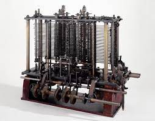

Ada Lovelace
La máquina habría utilizado un motor a vapor, y mediría 30 metros de largo por 10 de ancho. La introducción y salida de datos se haría mediante tarjetas perforadas, que la maquina podría leer y crear. Tendría la capacidad para almacenar 1000 números de 50 cifras cada uno, y realizar operaciones aritméticas con ellos. Ada Lovelace creó el primer algoritmo informático.
